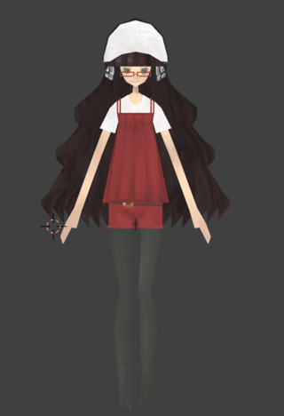
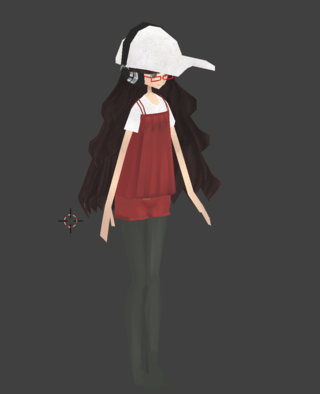
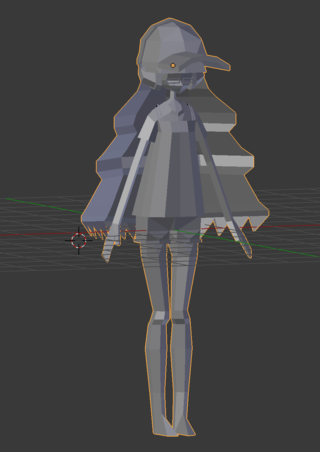
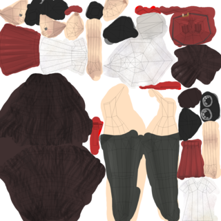
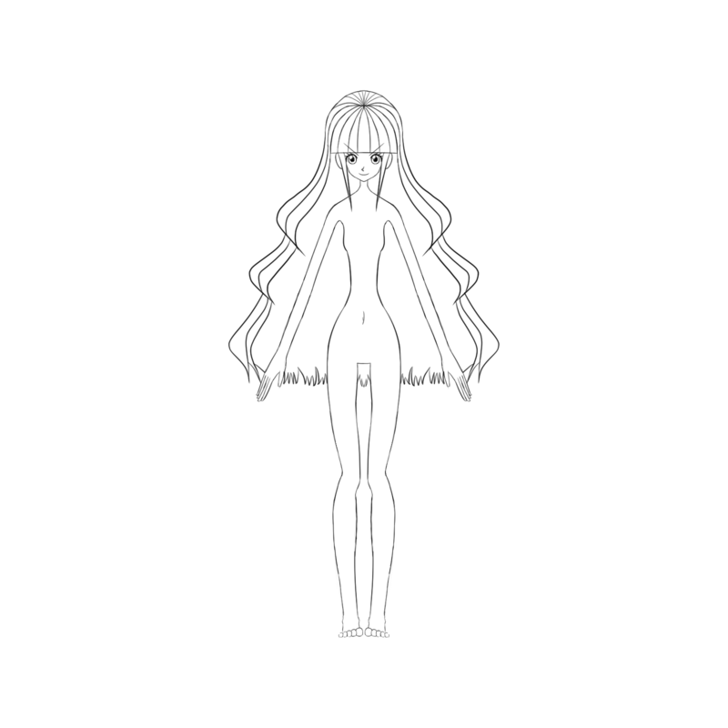

モデリングをしてみた
https://bydriv.github.io/blog/modeling-first-impression.html
created at
updated at
モデリングの練習も兼ねて，テーリの 3D モデルを試験的に制作してみた． そのことに関するメモ．


結果的に，1410ポリのモデルがひとつできた． (ブラウザによっては表示されないかもしれないけど，できたものは次の行に表示してある)
もともとモデリング自体は以前からやりたいと思っていて， 1月ごろには若干モデリングをして感触を確かめていた． そのときは無理だなとなってひとまず保留にしていたのだけど， 6月ころにかわいいローポリのツイートをいくつか見てローポリでもここまでかわいくできるのかと驚いたのと， Twitter の TL でモデリングをするひとがやけに増えてきていたので， ローポリに挑戦してみることにした．
1月の時点では数万ポリは使うような，いわゆるハイポリをつくろうとしていたけど， それをつくろうとすると当然だけど数ヶ月はかかることが明らかだったし， そもそも完成したとしてクオリティがどうなのという話もあるので， 今回は最初ということで，ひとまず500から1000ポリくらいのモデルをつくってみようということになった． もちろんそれでも難しかったけど，ひとまず見れるものができたので，今回はよしとする． ただ，結果的に1410ポリになってしまって，当初考えてたよりは若干大きめになってしまった．
1月に若干モデリングをして感じていたこととして， ポリゴンでかわいさを表現することは鬼門でテクスチャのほうがかわいさを表現しやすい， と感じていた．そこで今回はポリゴンでかわいさを表現することは諦めて， はじめからテクスチャでかわいさを表現しよう，という方針で始めた．
1410ポリのモデルはこんな感じ．顔とかほぼ平面だとわかると思う．

このままでも輪郭からなんとなくテーリとわかるけど，たぶん印象に与える影響はテクスチャのほうが大きい． その肝心のテクスチャはこんな感じ． (なんとなく雰囲気を伝えるために輪郭を重ねた画像を載せてるけど， 実際には輪郭部分を除いたものがテクスチャとして使われる． なので，この画像がそのまま使われるわけではない)

所要時間はおよそ5日． 当初考えてたよりは短期間で終わった．
下絵は1月に描いたものがあったのでそれを流用した．

見てのとおり，服は描いてない．まあそのへんは想像で補いながらつくった． 下絵でどの程度描くべきなのかはよくわかってないけど， まあ，とりあえず最終的にモデルができれば雑でもいいんじゃないかなとは思う (わたしの場合脳内イメージで補完できたけど，仕事でやる場合はさらに困難が伴うのかもしれない……)．
今後の展望
今回モデリングしてみたのは単純にテーリを立体にしてみたかったというのもあるけど， ゆくゆくは3Dゲーみたいなのもつくってみたいと思っていて， わたしでもモデリングができるのか，できるとしてどの程度のモデルならつくれるのか試したかったというのが大きい．
結果的には，ローポリゲーなら不可能でもない気はする，という感じになった． なのでせっかく静止状態のモデルもつくれたので，できればアニメさせたりいろいろ試してみたいけど， まあ，あまり先のことは考えてない． とりあえずテーリのモデルがこの世界に現出したので， まあできることもいろいろ増えたでしょう．